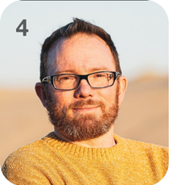
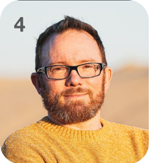

Additional Activities
Big Weekend encompasses more than just engaging in gospel-inspired discussions; it also fosters meaningful conversations among teenagers through dialogue, various activities, and enjoyable fellowship.
Discover the awesome reasons your church youth ministry absolutely needs to jump on board for the biggest youth bash of the year!
Register Right Now!
Big Weekend is the ultimate hangout for 12-18 year olds from all over the UAE and the Gulf! It’s all about inspiring the youth to rock their faith in Jesus while having a blast. Exhilarating games, awesome activities, uplifting worship, and gospel inspired teachings—all wrapped up in cozy small groups. Get ready for a weekend of fun and faith!
The event will take place at the Ramada Hotel & Apartments in Ajman from November 1 to 3, 2024. The registration fee is 550 AED, which includes accommodation for two nights (four individuals sharing a room), all meals (six in total), a themed Big Weekend T-shirt, and a Big Weekend merchandise bag.
The schedule begins on Friday, November 1, with check-in at 4:30 PM, followed by dinner at 6:00 PM and the program commencing at 7:00 PM. The event will conclude on Sunday, November 3, at 1:30 PM.

The theme for our upcoming event is "Pathway - Living for Eternity," which we will explore through the lens of Psalm 25.
The theme employ a journey metaphor to facilitate participants' reflection on their spiritual lives, concentrating on the concept of eternity and the preparation for the ultimate destination—Heaven. Emphasis is placed on spiritual readiness, resilience, and endurance within the Christian faith.
We will be having four teaching sessions each focusing on an aspect of ‘Living for eternity’ and the teaching is digging deep into Psalm 25. The session themes are: Prepare, Apply, Trust and Hope. Each session is about 2 hours long with activities, worship time and the talk.
Each session is followed by small groups time led by youth leaders where students will have the chance to process the topic with questions. On Saturday afternoon, we will have time for students to engage in different activities, spend time with friends and have free time.

 

Chris hails from the UK but has been soaking up the sun in the Middle East for nearly ten years! With a treasure trove of experience in youth projects, he's on a mission to craft spaces where the next generation can be recharged, grounded, and ready to shine bright!
Arno hails from the snowy wonderland of Finland and rocks the title of National Director of UAE YFC! With a heart full of passion, he’s on a mission to help young folks uncover their life’s purpose and unleash their inner talents. A lifelong learner at heart, he can’t resist sharing all the knowledge he picks up along the way!
Meet Elizabeth, an Aussie-Egyptian with a degree in international business and corporate experience. Now focused on uplifting youth, she uses her event-planning skills to inspire young adults to live purposefully. In her free time, she enjoys table tennis, basketball, clean comedy, and puzzles!
Frank's been the go-to guru for teens in the UAE since 2011, masterfully guiding them through the wild ride of becoming young adults! He’s all about sparking those dreams while sprinkling in some good ol' Gospel inspiration. Talk about a motivational leader!

Big Weekend encompasses more than just engaging in gospel-inspired discussions; it also fosters meaningful conversations among teenagers through dialogue, various activities, and enjoyable fellowship.
It is time for teenagers to reflect on and analyze what they have learned from the main sessions.
Teenagers will be encouraged to participate in worship, spend time in quiet reflection through prayer.
This year, we are launching a new program specifically designed for graduating teenagers.
Icebreakers and themed team-building games can effectively promote fellowship among teenagers.